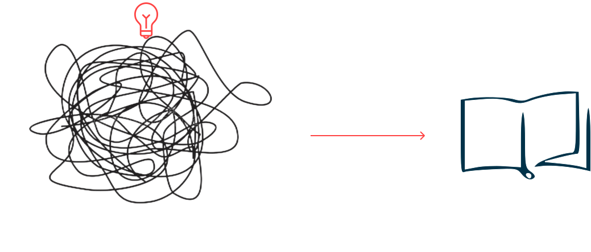

Содержание и форма
литературного произведения
Художественное произведение:
- принцип организации текста
- композиция
- художественная речь
- система изобразительных средств
- сюжет
- персонажи
- характеры
- идея произведения
Авторский замысел
первоначальный план будущего произведения, в котором заложены представления о его содержании и форме, основных чертах и сходствах (Возникает, как правило, до начала творческого процесса). Может быть как воплощенным, так и невоплощенным; завершенным или нет; трансформированным или неизмененным
Воплощение авторского замысла:
оформление замысла в конкретной художественной форме, процесс создания художественного произведения
Художественный вымысел
изображение событий или персонажей, которых не существует в реальности (существуют только в воображении автора).
Чаще воспринимается как то, что будет в будущем или каком- то другом мире, но так или иначе связан с реальной действительностью.
Мера художественного вымысла зависит от жанра, литературного направления и задумки самого автора.
Отношение к художественному вымыслу в различных литературных направлениях:
Классицизм, реализм, натурализм
Барокко, романтизм, модернизм, постмодернизм
требование достоверности, правдоподобия.
полная свобода автора в изображении событий.
Фантастика (от греческого phantastike — искусство воображать)
вид художественной литературы, основанный на особом типе образности. Предполагает нарушение законов реальности и высокую степень художественного вымысла.
- лежит в основе сказок и мифов
- как художественный прием, встречается в любых жанрах и направлениях
- Фантастическое допущение (условность) лежит в основе жанров утопии и антиутопии